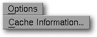

<!-- Documentation Xclamation (c)1994-2000 AXENE contact axene@axene.org>
<html>

<head>
<title>Options Menu</title>
</head>

<body BGCOLOR="#FFFFFF" BACKGROUND="Images/back.gif" TEXT="#000000">

<p ALIGN="right">  </p>

<p><br>
<br>
The Options Menu accesses the general configuration parameters of Xclamation. <br>
<br>
</p>

<hr>

<p align="center"><br>
 <br>
<small><i>Screen shot: Option Pulldown menu </i></small></p>

<p><br>
</p>

<hr>

<p><br>
</p>

<h3>The option menu contains the following entry:</h3>

<ul>
  <li><a NAME="cache_menu_entry">The <i>&quot;Cache Information...&quot;</i> option <b>modifies
    the parameters of the image cache</b>. It calls up the '</a><a HREF="Box_Image_Cache.html">image
    cache information</a>' dialog box. <br>&nbsp;</li>
</ul>

<p><br>
</p>

<hr>

<p ALIGN="right"></p>
</body>
</html>
